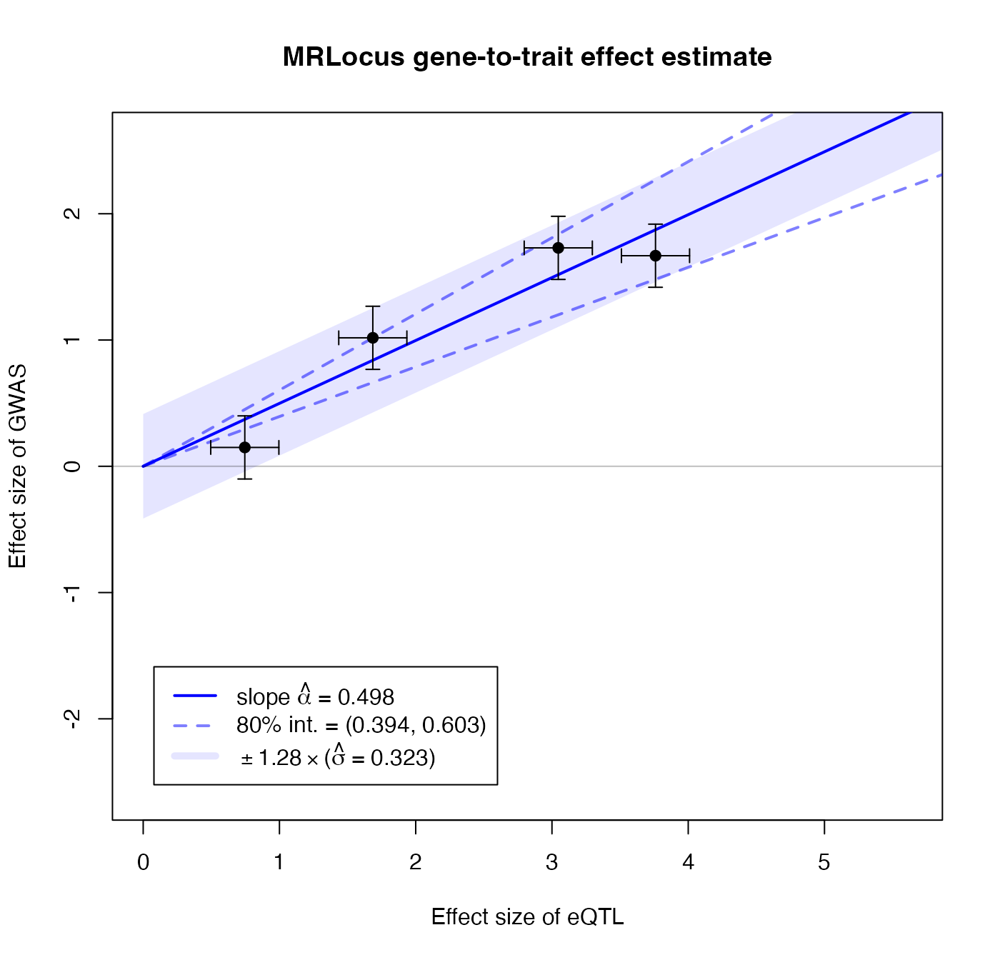

MRLocus - estimation of gene-to-trait effects
Anqi Zhu, Nana Matoba, Jason Stein, Michael Love
08/20/2020
Source:vignettes/mrlocus.Rmd
mrlocus.RmdAbstract
MRLocus provides estimation of gene-to-trait effects from eQTL and GWAS summary statistics, for loci with allelic heterogeneity: multiple LD-independent signal clusters representing distinct eQTLs. Evidence is aggregated across signal clusters for mediation of the downstream GWAS trait through the gene. MRLocus package version: 0.0.14Introduction
MRLocus provides Bayesian analysis of gene-to-trait mediation effects, making use of the Stan and RStan software packages for inference (Carpenter et al. 2017; Stan Development Team 2020).
The authors of the associated MRLocus manuscript (Zhu et al. 2020) is:
Anqi Zhu*, Nana Matoba*, Emmaleigh Wilson, Amanda L.Tapia, Yun Li, Joseph G. Ibrahim, Jason L. Stein, Michael I. Love
* Both authors contributed equally to this work.
In this vignette we demonstrate use of MRLocus on simulated summary statistics. The simulated data in this vignette does not include the steps of importing summary statistics and LD matrices from external files. For that, we recommend looking at the R code we used for analysis of the public datasets in the manuscript.
Briefly, two important helper functions for import and preprocessing that are provided in this package are collapseHighCorSNPs and flipAllelesAndGather, for importing summary statistics across LD-independent signal clusters (sets of SNPs that are non-overlapping and have low correlation in a reference population). We use the phrase “LD-independent signal cluster” as in the PTWAS software and paper (Zhang et al. 2019).
It is strongly recommended to use these two functions for data import, in particular as the first function will reduce the number of SNPs per cluster and help deal with identifiability issues during the Bayesian colocalization step. As described in the manuscript, MRLocus does not attempt to resolve putative causal SNPs among sets of SNPs with correlation \(> 0.95\), but instead it collapses this redundancy using collapseHighCorSNPs. The second function ensures that the alleles are flipped properly across eQTL and GWAS datasets (the function will handle this to avoid manual processing by the user), such that the alleles are coded in such a way that the downstream statistical modeling functions will expect. The second function ensures that both studies refer to the same allele, which is the expression-increasing allele for an index SNP within each LD-independent signal cluster.
We recommend using PLINK (Purcell et al. 2007) for generation of signal clusters (see Methods section of MRLocus manuscript).
We have not yet implemented, but plan on providing an import function from the TwoSampleMR package.
Simulated input data
The following simulated summary statistics are generated from a multivariate normal distribution, similar to the model used in eCAVIAR (Hormozdiari et al. 2016). In contrast, the simulations in the MRLocus manuscript make use of the twas_sim framework (Mancuso 2020).
library(mrlocus) set.seed(1) out <- makeSimDataForMrlocus()
This simulated data consists of a list of lists. The elements are: beta_hat_a, beta_hat_b, se_a, se_b, Sigma_a, Sigma_b, and alleles, which provide the estimated coefficients, standard errors (SE), and LD matrices for the two studies, A and B (typically, eQTL and GWAS), as well as a data.frame with allele information (SNP ID, reference allele, and effect allele). The LD matrices can be identical if distinct matrices for each study are not available. Each element itself should be a list of vectors/matrices/data.frames across LD-independent signal clusters.
We can make a simple plot of the beta_hat’s, estimated coefficients from A and B. The coefficients are numbered by the SNP order within each signal cluster.
plotInitEstimates(out)

Colocalization step
The first step in MRLocus is to perform colocalization of the studies. To do so, we loop over the signal clusters, and store the fitted models in a list called fit.
The following code chunk loops over signal clusters:
options(mc.cores=2) for (j in 1:nclust) { suppressWarnings({ fit[[j]] <- with(out, fitBetaColoc( beta_hat_a = beta_hat_a[[j]], beta_hat_b = beta_hat_b[[j]], se_a = se_a[[j]], se_b = se_b[[j]], Sigma_a = Sigma_a[[j]], Sigma_b = Sigma_b[[j]] )) }) }
We now create a list containing the posterior mean from the colocalization step, and the original SE values. Note the SE values are now referred to as sd.
Slope fitting step
The following function extracts one SNP per signal cluster with the largest posterior mean for the coefficient for study A (e.g. eQTL). The selected SNPs and their posterior mean values are plotted on the right panel in blue. We note that it is also possible to perform EM-based clustering (Scrucca et al. 2016) to extract more than one SNP per signal cluster, through use of the niter argument, although this was not evaluated in the MRLocus manuscript.
res <- extractForSlope(res, plot=TRUE)

Now we are ready to fit the slope. In our testing we have used 10,000 iterations, though fewer may be sufficient. This step is typically much faster than the colocalization step.
res <- fitSlope(res, iter=10000)
Examine MRLocus estimates
One of the elements in the results list res is the stanfit object, which can be explored with functions from the rstan package.
The posterior mean for the gene-to-trait slope, alpha, is near the simulated value of 0.5. The posterior mean for the dispersion around the slope, sigma, is also estimated. Note that the estimate for sigma has a large 80% credible interval, as we only have 4 signal clusters over which to estimate dispersion.
suppressPackageStartupMessages(library(rstan)) print(res$stanfit, pars=c("alpha","sigma"), probs=c(.1,.9), digits=3)
## Inference for Stan model: slope.
## 4 chains, each with iter=10000; warmup=5000; thin=1;
## post-warmup draws per chain=5000, total post-warmup draws=20000.
##
## mean se_mean sd 10% 90% n_eff Rhat
## alpha 0.490 0.001 0.086 0.400 0.587 3333 1.005
## sigma 0.264 0.012 0.246 0.044 0.567 445 1.015
##
## Samples were drawn using NUTS(diag_e) at Thu Aug 20 22:49:23 2020.
## For each parameter, n_eff is a crude measure of effective sample size,
## and Rhat is the potential scale reduction factor on split chains (at
## convergence, Rhat=1).MRLocus provides a plot that summarizes the estimation of the gene-to-trait effect. The estimated slope and an 80% credible interval are indicated with a solid blue line and dashed blue lines, respectively. The black points and error bars represent the posterior mean for top SNPs from colocalization and the original SE. An 80% band in light blue indicates a region that is expected to contain 80% of the eQTL-GWAS pairs across signal clusters, so reflecting the allelic heterogeneity. If the estimate of \(\sigma\) is of comparable size to \(\alpha\) times typical eQTL effect sizes (slope \(\times\) location of black points on the x-axis), this indicates a high degree of heterogeneity.
plotMrlocus(res, main="MRLocus gene-to-trait effect estimate")

Session info
## R version 4.0.2 (2020-06-22)
## Platform: x86_64-apple-darwin17.0 (64-bit)
## Running under: macOS Catalina 10.15.6
##
## Matrix products: default
## BLAS: /Library/Frameworks/R.framework/Versions/4.0/Resources/lib/libRblas.dylib
## LAPACK: /Library/Frameworks/R.framework/Versions/4.0/Resources/lib/libRlapack.dylib
##
## locale:
## [1] en_US.UTF-8/en_US.UTF-8/en_US.UTF-8/C/en_US.UTF-8/en_US.UTF-8
##
## attached base packages:
## [1] stats graphics grDevices utils datasets methods base
##
## other attached packages:
## [1] rstan_2.21.2 ggplot2_3.3.2 StanHeaders_2.21.0-5
## [4] mrlocus_0.0.14
##
## loaded via a namespace (and not attached):
## [1] tidyselect_1.1.0 xfun_0.16 purrr_0.3.4 V8_3.2.0
## [5] colorspace_1.4-1 vctrs_0.3.2 generics_0.0.2 htmltools_0.5.0
## [9] stats4_4.0.2 loo_2.3.1 yaml_2.2.1 rlang_0.4.7
## [13] pkgbuild_1.1.0 pkgdown_1.5.1 pillar_1.4.6 glue_1.4.1
## [17] withr_2.2.0 matrixStats_0.56.0 lifecycle_0.2.0 stringr_1.4.0
## [21] munsell_0.5.0 gtable_0.3.0 codetools_0.2-16 memoise_1.1.0
## [25] evaluate_0.14 inline_0.3.15 knitr_1.29 callr_3.4.3
## [29] ps_1.3.4 parallel_4.0.2 curl_4.3 fansi_0.4.1
## [33] Rcpp_1.0.5 backports_1.1.8 scales_1.1.1 desc_1.2.0
## [37] RcppParallel_5.0.2 jsonlite_1.7.0 fs_1.5.0 gridExtra_2.3
## [41] digest_0.6.25 stringi_1.4.6 processx_3.4.3 dplyr_1.0.1
## [45] grid_4.0.2 rprojroot_1.3-2 cli_2.0.2 tools_4.0.2
## [49] magrittr_1.5 tibble_3.0.3 crayon_1.3.4 pkgconfig_2.0.3
## [53] MASS_7.3-51.6 ellipsis_0.3.1 prettyunits_1.1.1 assertthat_0.2.1
## [57] rmarkdown_2.3 R6_2.4.1 compiler_4.0.2References
Carpenter, Bob, Andrew Gelman, Matthew Hoffman, Daniel Lee, Ben Goodrich, Michael Betancourt, Marcus Brubaker, Jiqiang Guo, Peter Li, and Allen Riddell. 2017. “Stan: A Probabilistic Programming Language.” Journal of Statistical Software, Articles 76 (1): 1–32. https://doi.org/10.18637/jss.v076.i01.
Hormozdiari, Farhad, Martijn van de Bunt, Ayellet V. Segrè, Xiao Li, Jong Wha J. Joo, Michael Bilow, Jae Hoon Sul, Sriram Sankararaman, Bogdan Pasaniuc, and Eleazar Eskin. 2016. “Colocalization of Gwas and eQTL Signals Detects Target Genes.” The American Journal of Human Genetics 99 (6): 1245–60. https://doi.org/10.1016/j.ajhg.2016.10.003.
Mancuso, Nicholas. 2020. https://github.com/mancusolab/twas_sim.
Purcell, Shaun, Benjamin Neale, Kathe Todd-Brown, Lori Thomas, Manuel A. R. Ferreira, David Bender, Julian Maller, et al. 2007. “PLINK: A Tool Set for Whole-Genome Association and Population-Based Linkage Analyses.” The American Journal of Human Genetics 81 (3): 559–75. https://doi.org/10.1086/519795.
Scrucca, Luca, Michael Fop, T. Brendan Murphy, and Adrian E. Raftery. 2016. “mclust 5: Clustering, Classification and Density Estimation Using Gaussian Finite Mixture Models.” The R Journal 8 (1): 289–317. https://doi.org/10.32614/RJ-2016-021.
Stan Development Team. 2020. “RStan: The R Interface to Stan.” http://mc-stan.org/.
Zhang, Yuhua, Corbin Quick, Ketian Yu, Alvaro BarbeiraFrancesca Luca, Roger Pique-Regi, Hae Kyung Im, and Xiaoquan Wen. 2019. “Investigating Tissue-Relevant Causal Molecular Mechanisms of Complex Traits Using Probabilistic Twas Analysis.” bioRxiv. Cold Spring Harbor Laboratory. https://doi.org/10.1101/808295.
Zhu, Anqi, Nana Matoba, Emmaleigh Wilson, Amanda L. Tapia, Yun Li, Joseph G. Ibrahim, Jason L. Stein, and Michael I. Love. 2020. “MRLocus: identifying causal genes mediating a trait through Bayesian estimation of allelic heterogeneity.” bioRxiv. https://doi.org/10.1101/2020.08.14.250720.